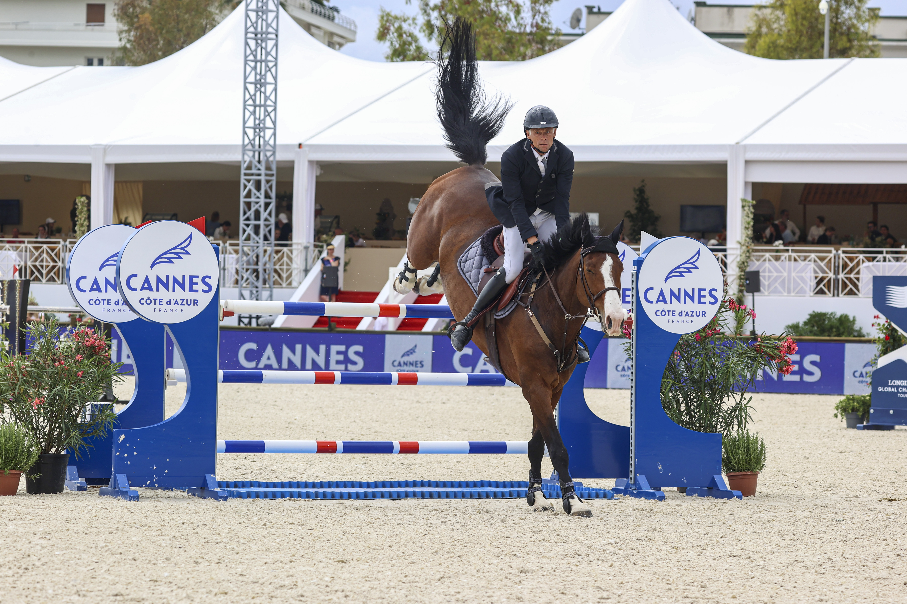

Inseminación, ICSI y transferencia embrionaria: las tres llaves de la cría FEI moderna
La inmensa mayoría de caballos warmblood que pelean hoy los grandes premios de salto, los Gran Premio Especial de doma o los CCI5* de concurso completo no han nacido por monta natural. Inseminación artificial, transferencia embrionaria y, más recientemente, ICSI sostienen el aparato productivo de los principales…

Uso editorial
La inmensa mayoría de caballos warmblood que pelean hoy los grandes premios de salto, los Gran Premio Especial de doma o los CCI5* de concurso completo no han nacido por monta natural. Inseminación artificial, transferencia embrionaria y, más recientemente, ICSI sostienen el aparato productivo de los principales studbooks ecuestres y son una de las razones de fondo por las que la cría FEI ha podido especializarse tan rápido. Es también el gran punto de divergencia con el turf, donde las federaciones de carreras siguen exigiendo, por reglamento, monta natural para que un potro de Pura Sangre Inglés entre en el General Stud Book.
La inseminación artificial (IA) es la técnica troncal. Permite que un semental aprobado sirva a cientos de yeguas en distintos continentes sin desplazarse, con semen fresco para uso local, refrigerado para envíos cortos o congelado para distribución global. Su adopción masiva en warmbloods desde los años ochenta cambió la cría por completo: redujo el riesgo sanitario asociado al traslado y a la monta directa, abarató la cubrición y permitió que un solo padrillo dejase huella en miles de productos a lo largo de su carrera reproductiva. Las tasas de gestación con semen fresco siguen siendo claramente superiores a las del congelado, lo que explica que algunas estaciones combinen ambos formatos según destino.
La transferencia embrionaria (TE) resuelve un problema que la IA por sí sola no aborda: el de la yegua deportiva en activo. En el procedimiento estándar la yegua donante es inseminada, el embrión se lava del útero entre el séptimo y el octavo día tras la ovulación, y se trasplanta a una yegua receptora que lleva la gestación a término. La donante puede así seguir compitiendo —y dejar más de un producto al año— sin interrumpir su carrera deportiva. La TE es responsable directa de buena parte de las grandes familias de yeguas que dominan los pedigris de las principales pistas de salto y doma en los últimos quince años.
La inyección intracitoplasmática de espermatozoides (ICSI) es la pieza más reciente y, con diferencia, la más cara. Consiste en inyectar un único espermatozoide directamente en el citoplasma de un ovocito recuperado por aspiración folicular; el embrión resultante se cultiva en laboratorio y se transfiere también a una receptora. Es la técnica de elección cuando el semen es escaso —porque el semental ha fallecido y solo quedan pajuelas contadas, porque la fertilidad del padrillo es baja, o porque la yegua presenta dificultades reproductivas que impiden la IA convencional—. Las tarifas de un embrión ICSI viable se mueven en horquillas amplias en el mercado europeo y han abierto, en la práctica, una vía para seguir produciendo descendencia de sementales históricos años después de su muerte.
La FEI no regula la cría: lo hacen los studbooks. La WBFSH agrupa a unas setenta federaciones de cría reconocidas y publica cada año los rankings de sementales por disciplina —salto, doma y completo— que sirven de termómetro internacional. KWPN, Holsteiner Verband, Hannoveraner Verband, Selle Français, Zangersheide, BWP, Oldenburg y Westfalen mantienen procesos de aprobación propios, con stallion shows y pruebas de rendimiento que filtran cada año qué padrillos jóvenes obtienen licencia para cubrir. Es precisamente esa autonomía la que ha permitido que las tres técnicas convivan, mientras el turf de galope —regulado por los jockey clubs nacionales y la Federación Internacional de Autoridades Hípicas— ha optado por mantenerse en la monta natural como condición innegociable para inscribir a un potro en su stud book.
— Redacción de Hípica al Día